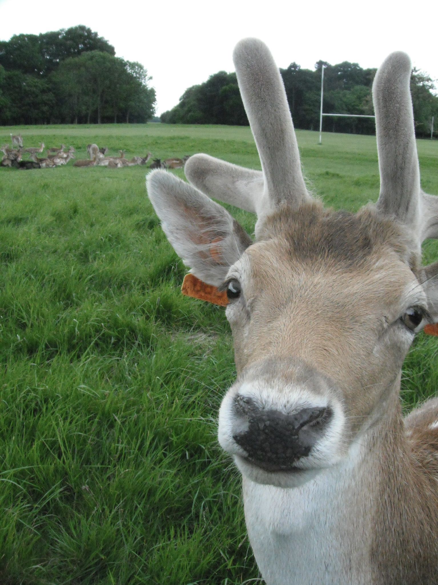
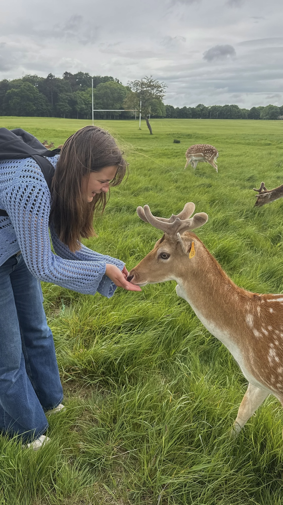
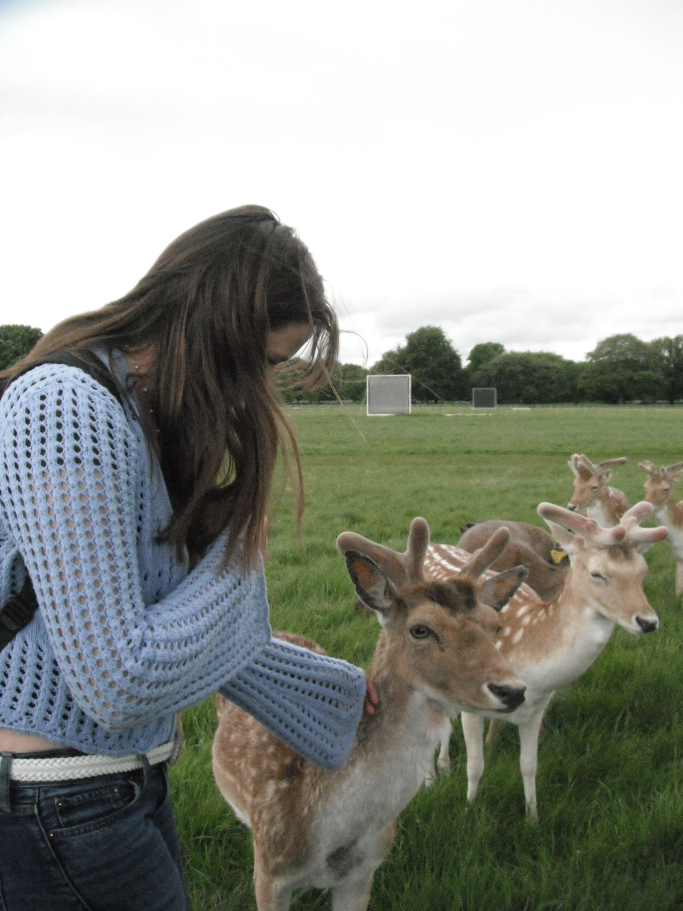

Overview
- Duration: 2 hours
- About 30 minutes from the Temple Bar district
- Enter through the main front entrance of Phoenix Park and walk until you see deer to the side
My Experience
This was one of our trip highlights. We went to Phoenix Park with carrots and cashews (even though it says not to feed the deer), and we walked along the main sidewalk until we spotted a large herd of deer to our left. We walked over and fed them carrots and nuts, but we found the nuts were a lot easier to control. When we attempted with the carrots, we were immediately swarmed, whereas with nuts, we were able to conceal that we had them until we were ready. The deer were so friendly and came right up to us, which was so fun.
1 / 4

Deer Closeup
2 / 4

Feeding the deer
3 / 4

So many deer
4 / 4

Petting the deer